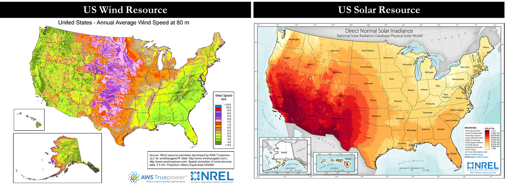
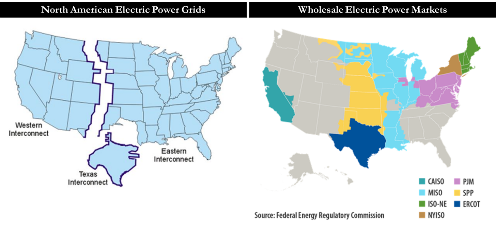

Renewable energy require large-scale transport infrastructures
We do not want wind and solar energy to only be consumed at the point of production, and are not produced uniformly at the scale of a country, a continent. They also requirement huge upfront investments. In that sense these two energies are very similar to oil.


TODO Do the same thing for Europe
References
- The Last Bear Standing's Windmill and oil wells (the figures)